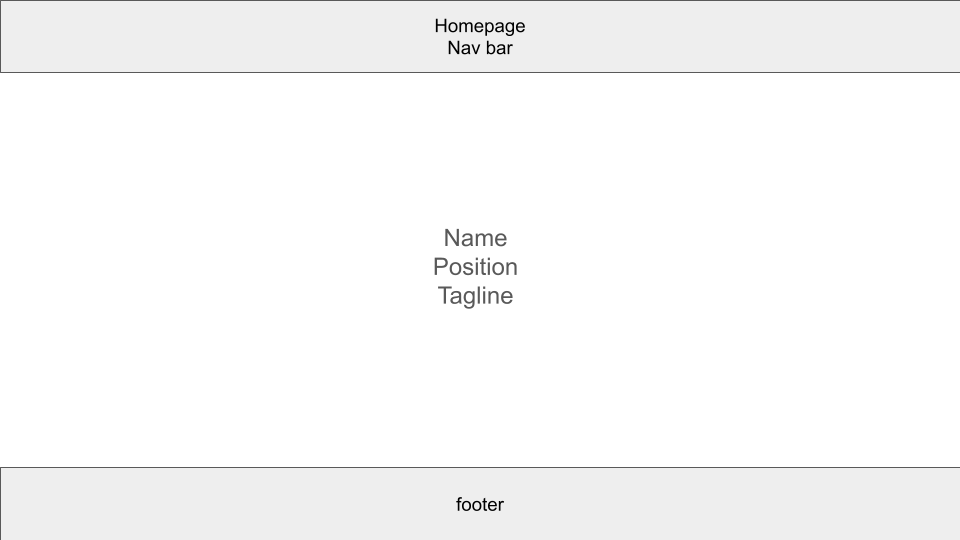
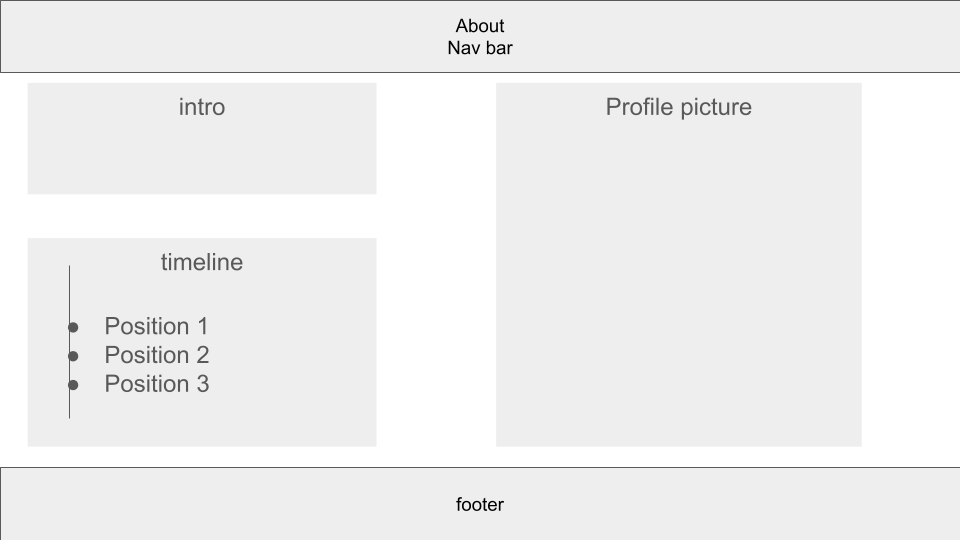
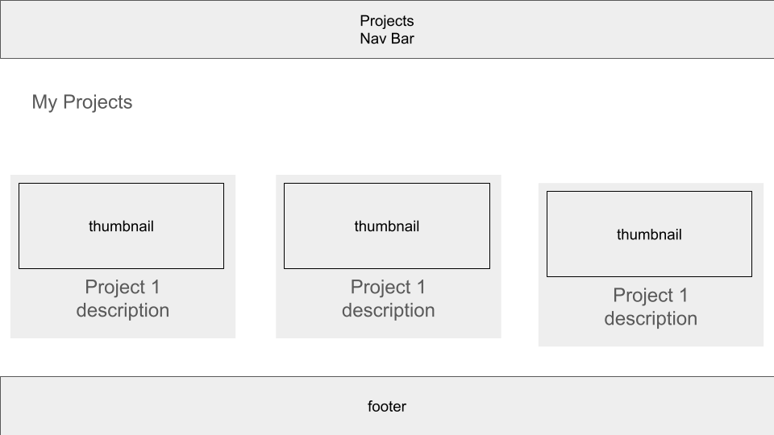
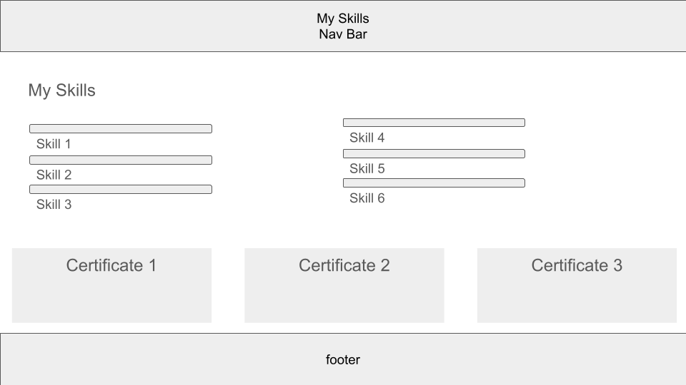
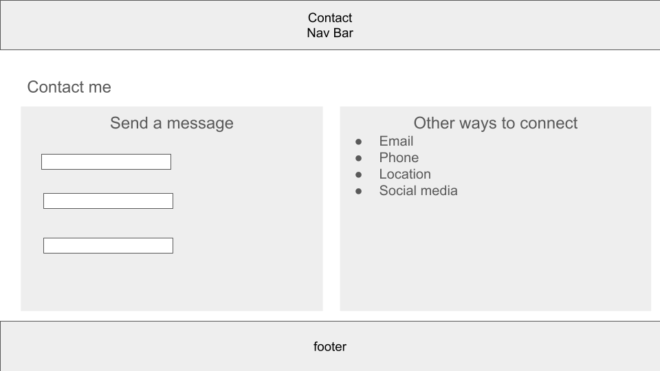

Introduction
This project is about implementing a portfolio website that everyone who wants to know more about me can have a good idea. The site serves as a comprehensive representation of my skills, experiences, and personality, allowing visitors to quickly understand who I am and what I can offer.
Inspiration
Three professional portfolio sites that inspired me:
- Ali Abdaal - I learned about effective personal branding and clean, user-friendly design.
- Jon Barron - This site taught me about minimalist design and how to present academic and professional information clearly.
- Pha Nguyen - I was inspired by the clean layout and effective use of white space in presenting personal projects.
Accessibility
Three ways in which my site is accessible:
- Searchable through the web, allowing for easy discovery via search engines.
- Accessible directly through URL, providing a straightforward way to reach the site.
- Linked from my other social media profiles, creating a network of online presence.
Usability
Three ways in which I considered the usability of my site:
- Clear layout with clean, minimal font for easy reading and navigation.
- Dark mode option for multiple device modes, enhancing readability in different lighting conditions.
- Alt text for images to assist users with visual impairments.
Learning
Three things I learned while creating my site:
- HTML-only websites are quick and easy to implement, providing a solid foundation.
- Adding CSS can be time-consuming at first, but it allows for much more extensive control in the long term.
- Building a website for myself is an enjoyable and rewarding experience.
Evaluation I: Successes
Aspects of my work that I think were particularly successful:
- The website is clean and informative, effectively conveying my personal and professional information.
- I've incorporated all the required components, ensuring a comprehensive portfolio.
Evaluation II: Areas for Improvement
Aspects of my work that could be improved:
- I still don't think videos are appropriate anywhere on my site, so I didn't incorporate them. However, in the future, I might reconsider this decision and explore ways to effectively use video content to enhance my portfolio.
Resources
Resources used in my work:
- Google - for general research and troubleshooting
- Pinterest - for design inspiration and layout ideas
Appendices
Wireframes
[Insert 5 wireframe images here]
    